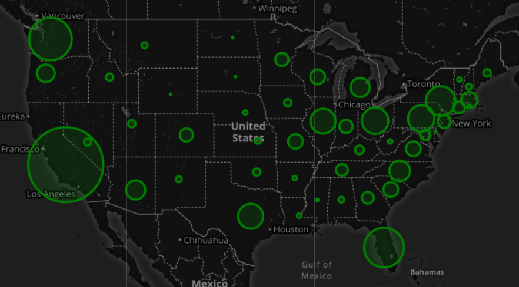

An Engineer and Data Professional, excited by the insight found when exploring data and the beauty and clarity interactive data visualizations provide on topics from social media, to finance, to sports. Please feel free to reach out and get in touch!

Weather By Latitude
A study of weather patterns by latitude, utilizing API calls to OpenWeatherMap to gather data on a random assortment of locations around the globe. Patterns and visualizations are presented via a responsive webpage.
World Refugee Migration
A study of world refugee migration from 1990-2016. The primary visualizations is an interactive, time-based map showing patterns in battle-related death, fleeing refugees, and asylum seekers for each country over time. Additionally, you can select a country to display it's summary statistics.
Belly Button Biodiversity
An exploration of an unusual dataset on the diversity of micro-organisms sampled from study participants' belly buttons.

News Tweet Sentiment
A sentiment analysis of major news outlets' most recent tweets. Visualizations explore the sentiment of each individual tweet, as well as the average sentiment of each outlet. Data gathered from Twitter's API.

March Madness By Seed
A study of NCAA Basketball Tournament results according to seed. visualizations explore typical seed performance, average expected results, liklihood of upsets, and teams that have historical overperformed or underperformed expectations.

Mars Data Scraping
A webpage of images and information on Mars, delivered via datascraping of prominent Mars-specific and general space exploration related agencies and authorities.
Last Week's Earthquakes
An interactive visualization of world-wide earthquakes that have occurred within the last week. Data is sourced from the US Geological Services API and an interactive map displays recent earthquakes with visual indications of magnitude.

A sortable table and interactive visualization of self-reported UFO sightings to the National UFO Reporting center (NUFORC). Data includes over 20,000 reported sightings from 2010-2014
Reported UFO Sightings
A sortable table and interactive visualization of self-reported UFO sightings to the National UFO Reporting center (NUFORC). Data includes over 20,000 reported sightings from 2010-2014